学习了解析几何以后，我们就可以利用函数图象来把一个代数问题转换成一个几何问题．同时，由于这种转换是相对的，在遇到一个几何问题的时候，也可以当作代数问题来看待．比如：如图12－12所示，经过坐标系上两个点作一条直线，请问，这条直线和y 轴的交点坐标是什么？
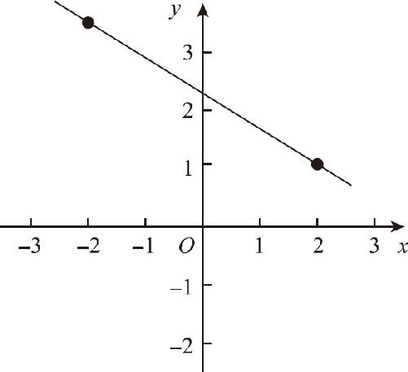
图12－12
很明显，这就是一个简单的几何问题，由于两点确定一条直线，既然两个点的坐标都有了，我们用直尺把它们连接起来不就可以了吗？可是，画完这条线你就会发现，自己很难精确指出坐标位置到底是多少．当直线与y 轴相交的点介于2.3和2.4之间时，谁能告诉我们，这个坐标值到底是2.32还是2.33呢？几何作图问题会受到精确度的限制，不能得出准确的结果．要想求得坐标的精确数值，就必须借助代数表达式的帮助，就必须把这个几何问题转换成代数问题，这也就是笛卡尔发明解析几何的主要目的．
接下来，我们就一起来分析一下这个问题：比如，题目给出的两个坐标点分别为（3，4）和（6，10）．那么，过这两点的直线会经过y 轴的什么位置呢？在坐标系中，直线对应的函数一定是线性函数，解析表达式一定只能是y ＝kx ＋b 的形式，而且这条直线和y 轴的交点的纵坐标就是b ．理解了这一点以后，我们就可以根据两组坐标数字求得函数中k 和b 的精确数值．
在这个世界上，似乎并不存在一成不变的东西，变化之中隐藏着不变的性质，不变之中隐藏着变化的规律．一个函数中的变量和常量也是如此：在y ＝kx ＋b 这个函数表达式中，x 和y 应该是变量，k 和b 都应该是常数．但只是一个常识，具体问题还必须具体分析，比如，现在我们知道的两组数据就都是x 和y 的坐标数据，k 和b 的情况一概不知，所以此时就可以把k 和b 看成是变量，把x 和y 看成是常数，只要把x 和y 对应的两组坐标数据代入到y ＝kx ＋b 中，就可以得到一个二元一次方程组，解出这个方程组，就不难求出k 和b 的值，因为k 和b 都是方程的系数，数值是暂时不确定的，所以这种求解方法，又叫作待定系数法．
待定就是等待确定，怎么确定？只能靠x 和y 的坐标数据来确定！
我们把（3，4）和（6，10）这两组坐标代入到y ＝kx ＋b 中，就可以得到如下方程组：
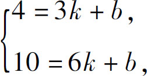
两式相减，得到3k ＝10－4＝6，
解得k ＝2，
再把k ＝2的结果代入到4＝3k ＋b 中，
得到b ＝4－3k ＝4－6＝－2．
因为一次函数和y 轴的交点纵坐标是b ，所以我们就知道，它在这一点的坐标为（0，－2）．这样，我们就成功地通过代数方法求解了一个几何问题．
接下来，我们再处理一个问题：如图12－13所示，已知直线AB 的函数表达式是y ＝4x ＋2，同时直线AB 分别与x 轴y 轴相交于A 、B 两点，则AB 和原点O 之间的三角形AOB 的面积是多少？让我们分析一下：由于x 轴和y 轴的夹角是直角，所以这个三角形的面积，可以通过x 轴y 轴上的两条直角边来计算．因此，我们只需要求出x 轴与y 轴上的交点坐标即可．y 轴的交点很简单，因为线性函数的常数项就是y 轴的截距，所以根据函数表达式y ＝4x ＋2直接就能得到，y 轴的交点肯定就是（0，2），那么x 轴的交点是多少呢？由于x 轴上所有点的y 轴坐标都是0，所以x 轴上的交点，就是当y ＝0的时候，x 的对应数值．完整的解题过程如下：
把x ＝0代入y ＝4x ＋2，得到：y ＝2，即OB ＝2；
把y ＝0代入y ＝4x ＋2，得到：0＝4x ＋2，
解得x ＝
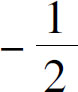
，即OA ＝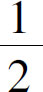
，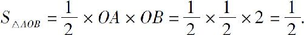
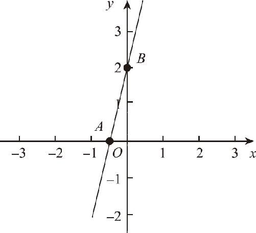
图12－13
上述问题都是通过求解直线和坐标轴的交点来解决的，当任意两条直线相交时，它们的交点坐标又应该如何求解呢？以下面的问题为例：如图12－14所示，两条直线e1 、e2 相交于点E ，已知两条直线的函数解析式分别为y ＝ax ＋b 和y ＝cx ＋d ，求E 点的坐标．
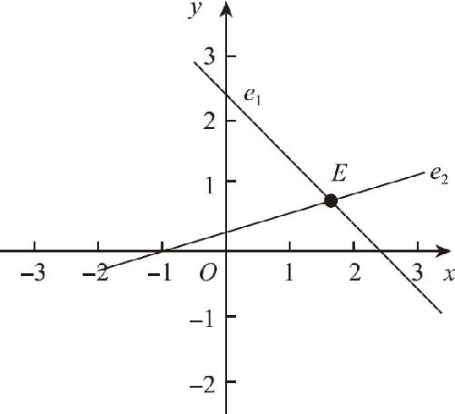
图12－14
既然是两条直线的交点，说明它应该既在第一条直线上，又在第二条直线上．也就是说，这个点既满足第一个函数的要求，又满足第二个函数的要求．这就意味着当x 等于某一数值的时候，两个函数的y 值是相同的，因此，我们只需要把这两个函数式当作方程组联立一下方程，就可以求出x 的数值．具体过程如下：
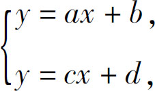
两式相减，得到：（a －c ）x ＝d －b ，
解得：
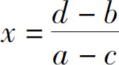
，代入y ＝ax ＋b ，得到：
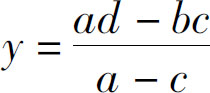
，∴当a ≠c 时，E 点的坐标为
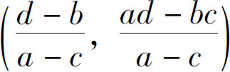
，当a ＝c 时，两直线平行，无任何交点．